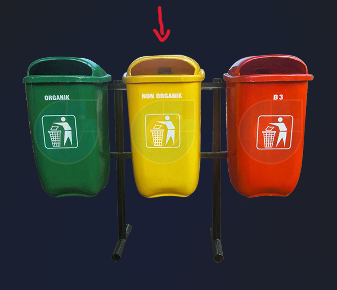
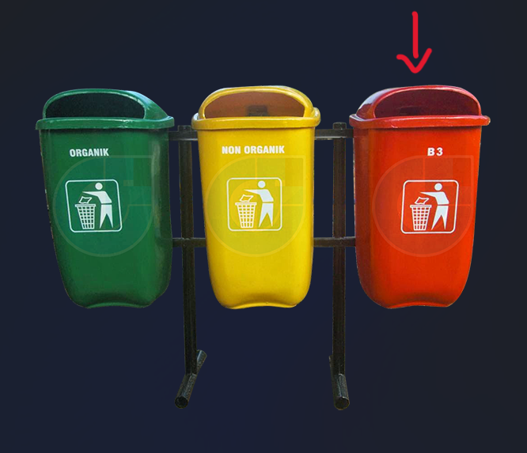

Kondisi Sampah di Indonesia
Negara Indonesia merupakan negara penghasil sampah plastik ketiga terbesar di dunia. Berdasarkan data Indonesia National Plastic Action Partnership yang dirilis sebanyak 67,2 juta ton sampah Indonesia masih menumpuk setiap tahunnya, dan 9 persennya atau sekitar 620 ribu ton masuk ke sungai, danau dan laut. Diperkirakan sebanyak 85.000 ton sampah yang dihasilkan Indonesia per harinya. Banyak sekali bukan? Untuk mengatasi permasalahan ini, kita bisa melakukan pemilahan sampah berdasarkan jenisnya.
-
Hijau
Tempat sampah berwarna hijau untuk jenis sampah organik. Sampah organik adalah sampah yang alami dan cepat terurai. Contoh sampah organik adalah daun, ranting pohon dan sisa makanan.
-

Kuning
Tempat sampah berwarna kuning digunakan untuk sampah anorganik. Sampah anorganik adalah sampah yang sulit terurai. Contohnya seperti plastik, kaleng, styrofoam dan sampah lainnya yang berasal dari bahan plastik.
-

Merah
Tempat sampah berwarna merah giunakan untuk menampung sampah khusus dengan jenis bahan berbahaya dan beracun atau B3. Contohnya seperti pecahan kaca, bahan-bahan kimia dan benda berbahaya lainnya.
Kenapa sih harus memilah sampah?
Tujuan pengelolaan sampah yang benar dan tepat lainnya adalah untuk membebaskan laut kita dari tumpukan sampah. Tumpukan sampah yang membahayakan makhluk hidup dan merusak laut merupakan hasil dari pemilahan atau pengelolaan sampah yang sembarangan.
Apa manfaat dari pemilahan sampah?
Manfaat dari pemilahan sampah adalah bisa memudahkan dalam pendauran ulang sampah, kita juga bisa memilih sampah mana yang akan didaur ulang dan mana yang harus dihancurkan. Kemudian manfaat lainnya adalah bisa mencegah terjadinya banjir, mencegah bau tidak sedap, dan tentunya bisa menjaga kebersihan dan keasrian lingkungan.
Apa yang terjadi jika tidak memilah sampah?
Akibat dari sampah yang tidak dipilah-pilah yaitu dapat menyebabkan senyawa kimia yang terkandung di dalam sampah akan bercampur dan mencemari lingkungan. Dampak akibat terjadinya pencemaran sangat beragam, seperti dapat menyebabkan infeksi virus, penyakit, rusaknya lingkungan, dan hilangnya keseimbangan ekosistem.